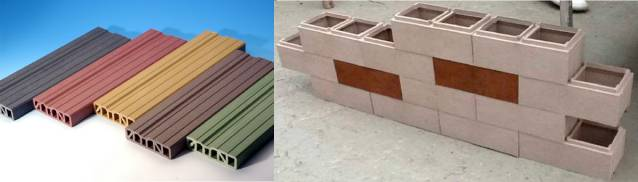
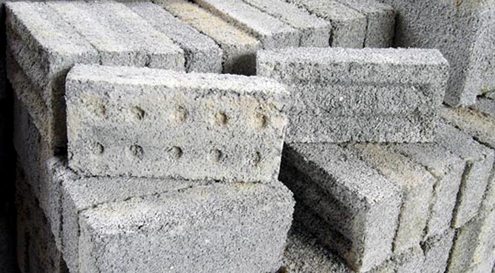
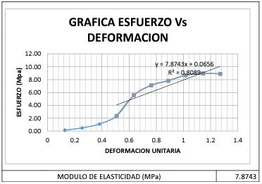
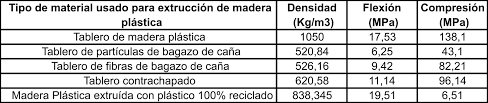
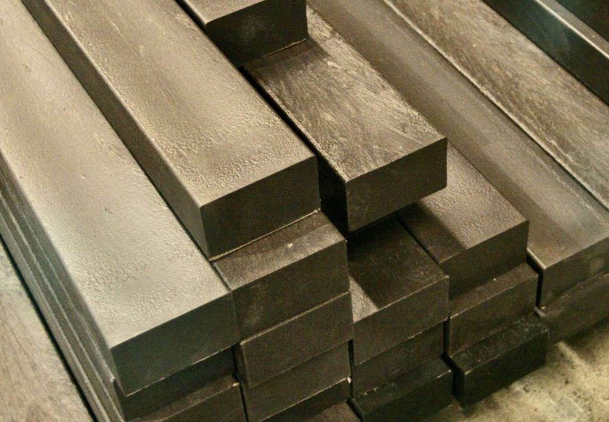

CASAS
La fabricación de plástico reciclado consume menos energía que la producción de plástico virgen, lo que puede contribuir a reducir las emisiones de gases de efecto invernadero.
Learn more¡ PONEMOS EL MUNDO EN TUS MANOS !

El uso de plástico reciclado en productos de construcción ha ganado popularidad en los últimos años debido a sus beneficios ambientales y económicos. A continuación, te explicaré por qué estos productos pueden tener buena calidad y daré algunas explicaciones técnicas al respecto.
Los ladrillos convencionales son bloques de arcilla o cemento utilizados en la construcción de edificios y otras estructuras. Según estudios recientes, los ladrillos convencionales son responsables de una gran cantidad de emisiones de gases de efecto invernadero durante su producción. Según Irfan et al. (2018), "La producción de ladrillos convencionales emite grandes cantidades de dióxido de carbono (CO2) y otros gases de efecto invernadero, lo que contribuye significativamente al cambio climático".
Por otro lado, se ha propuesto el uso de ladrillos hechos con plástico reciclado como una alternativa más sostenible. Según Khiadani et al. (2021), "Los ladrillos de plástico reciclado son una alternativa viable y sostenible a los ladrillos convencionales, ya que pueden reducir significativamente las emisiones de gases de efecto invernadero y ayudar a reducir la cantidad de residuos plásticos que terminan en vertederos y océanos".
En cuanto a las propiedades mecánicas, los ladrillos convencionales tienen una alta resistencia a la compresión, lo que los hace adecuados para soportar cargas pesadas. Según Tomos et al. (2017), "Los ladrillos convencionales tienen una resistencia a la compresión que puede variar entre 3 y 40 MPa, lo que los hace adecuados para estructuras de carga".
En contraste, los ladrillos hechos con plástico reciclado tienen una resistencia a la compresión más baja que los ladrillos convencionales. Según Kumar et al. (2020), "La resistencia a la compresión de los ladrillos de plástico reciclado fue de alrededor de 2-10 MPa, lo que es inferior a la resistencia a la compresión de los ladrillos convencionales".
Sin embargo, se ha demostrado que los ladrillos hechos con plástico reciclado tienen una buena durabilidad y resistencia al agua. Según Ozbakkaloglu et al. (2021), "Los ladrillos de plástico reciclado mostraron una resistencia satisfactoria al agua y a la intemperie en comparación con los ladrillos convencionales".

La madera convencional es un material natural y renovable utilizado en la construcción desde hace siglos, mientras que la madera hecha con plástico es un material compuesto que combina fibras de madera y plástico. Ambos tipos de madera tienen ventajas y desventajas en términos de costo, durabilidad, mantenimiento y sostenibilidad.
Según Baker (2017), la madera convencional es más barata que la madera hecha con plástico y tiene una huella de carbono más baja debido a su origen natural. Sin embargo, la madera convencional es susceptible a la putrefacción, la deformación y el ataque de insectos, lo que reduce su durabilidad y aumenta los costos de mantenimiento.
 Por otro lado, la madera hecha con plástico es más duradera y resistente a la putrefacción y los insectos que la madera convencional (Morton, 2018). Además, su mantenimiento es más fácil y requiere menos recursos que la madera convencional, ya que no necesita ser pintada, teñida o sellada regularmente (Kahle et al., 2016). Sin embargo, la producción de madera hecha con plástico consume más energía y emite más gases de efecto invernadero que la producción de madera convencional (Baker, 2017).
Según estudios de laboratorio, la madera hecha con plástico tiene una resistencia a la flexión y una rigidez significativamente mayores que la madera natural (Segerholm et al., 2012). Además, la madera hecha con plástico también tiene una mayor resistencia al impacto y a la tracción que la madera convencional (Chen et al., 2016).

La fabricación de plástico reciclado consume menos energía que la producción de plástico virgen, lo que puede contribuir a reducir las emisiones de gases de efecto invernadero.
Learn moreLos materiales de construcción y fontanería fabricados con plástico reciclado pueden ser resistentes y duraderos, lo que los hace ideales para su uso en edificios y hogares.
Learn more